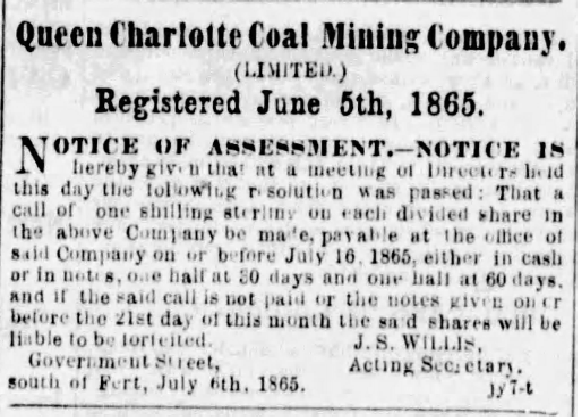
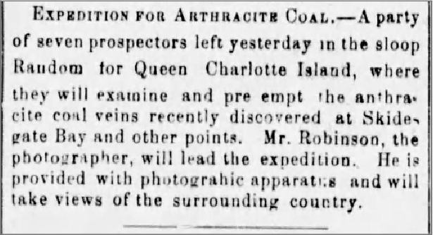
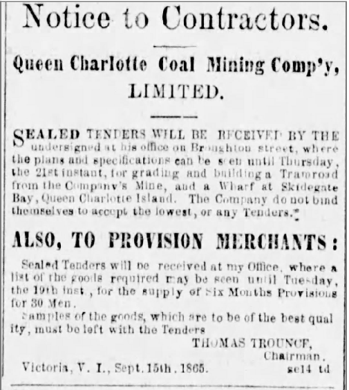
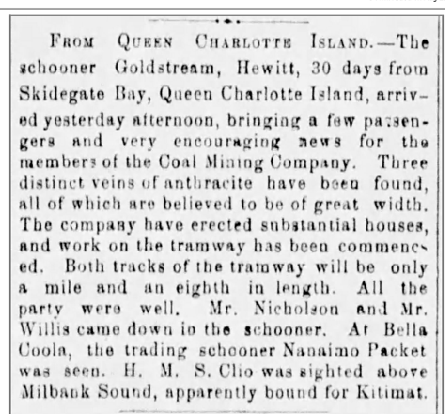
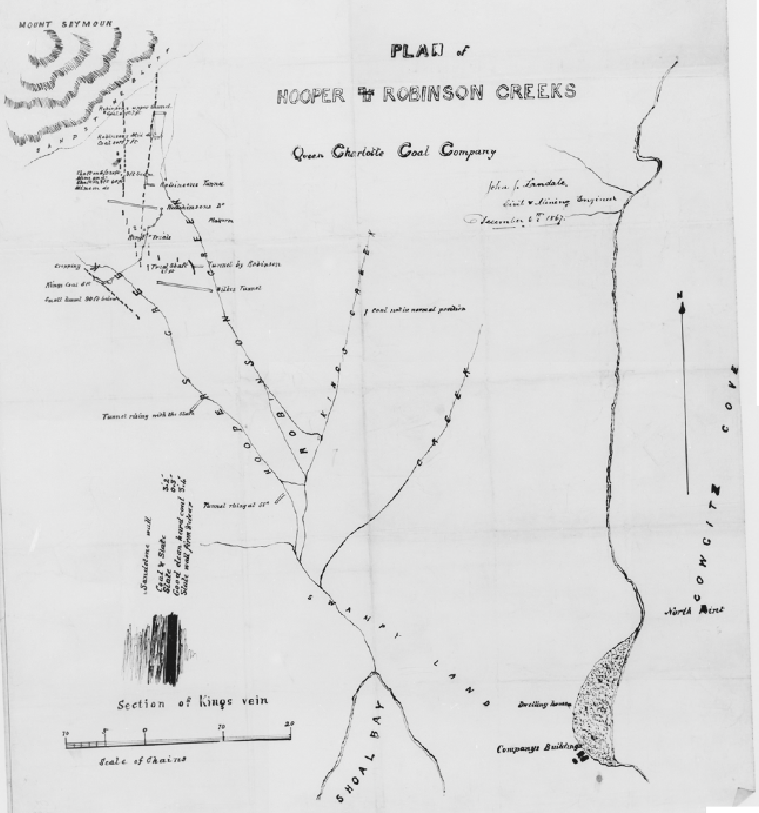
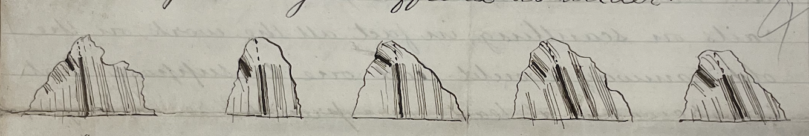
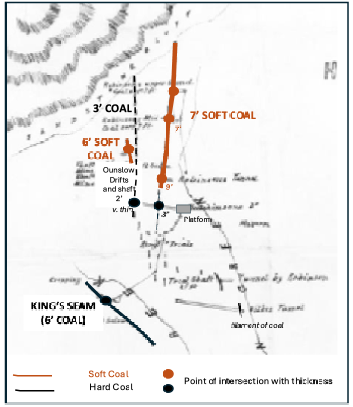
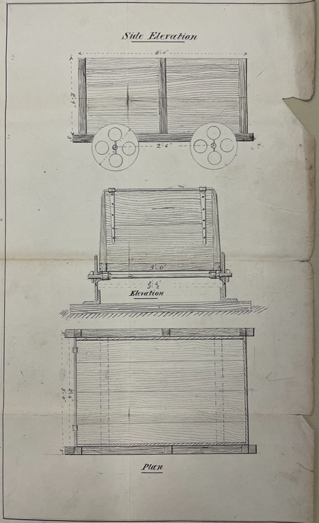

3 Queen Charlotte Coal Company: Appraisal and Development of the Cowgitz Coal
3.1 Early Appraisal of the Cowgitz Coal Deposit
William Downie, in his 1859 report to Governor Douglas on results of prospecting in the Queen Charlotte islands, commented about the similarity of the coal-bearing rock in Skidegate to that of the then rapidly developing coal mines at Nanaimo. This may have been what piqued the interest of a group of Victoria investors who, in 1864, sent a party of coal miners to Skidegate from Victoria to assess the deposit.
This first expedition met with difficulties and delays en route—taking six weeks to make the trip, having left Victoria on August 1st, 1864, and arriving at Skidegate on September 15th. They found outcropping coal on September 17th, but due to their supplies being nearly exhausted, were forced to depart for Victoria on September 18th without having conducted a proper assessment. They did, however, obtain
“satisfactory proof that there was a seam of Anthracite some four feet six inches in thickness.”
Faced with this “imperfect,” but encouraging information, the Queen Charlotte Coal Mining Company “Limited” (QCCCo) was registered on June 5th, 1865. On July 6th, a call to shareholders was made for funds to underwrite a second expedition to Skidegate, which George Robinson—formerly superintendent of coal mines at Nanaimo, and subsequently a well-known photographer—was hired to lead. Robinson was also a “significant” shareholder in the company.
QCCCO Operational Locations
Contemporary Newspaper Coverage

As reported in the 1865 Prospectus and Report with Articles of Association of the Queen Charlotte Coal Mining Company “Limited”:
“A party of miners were engaged, a small sloop was purchased and provisioned, and a party sailed, having clearance from New Westminster, on the 5th June 1865, for Queen Charlotte Island.”
Departure of the party from Victoria was noted in the newspaper:

3.2 Robinson’s 1865 Field Report
Upon his return to Victoria on August 11th, 1865, Robinson provided, on August 14th, a detailed report of the expedition to shareholders—as follows:
“Arrived Skidegate Bay on the 22nd June. Early the following morning we proceeded to the vicinity of the Coal Mine, which we found to be 15 miles (W.S.W.) distant from the Skidegate village. We reached our destination about noon, and commenced our search for Coal the same day; but without success. We, however, resumed our search the following morning, and were rewarded by striking a seam of Anthracite Coal which was cropping out on the side of a high range of hills which afterward proved to be a branch of a mountain some two or three thousand feet in height and which, in compliment to His Excellency Governor Seymour, I named ‘Mount Seymour.’
I afterwards traced the out-crop of the seam for some two or three hundred yards, finding it varying in thickness from three to seven feet, and of excellent quality. To this point I therefore directed my most special attention, and in the course of the next month succeeded in finding a continuation of the seam in two adjoining ranges of hills, lying to the southward of the one in which we first found it, but each running into or being branches of Mount Seymour. The entire distance from the extreme points at which the out-crops were found would be from one to two miles—having in each case the same characteristics, and being of a similar quality to that first struck, and from which I had some seven or eight tons of Coal extracted and packed down to the beach by Indians, many of whom followed in our rear, being anxious to see what we were going to do.
Some five or six tons of this coal I have brought down with me by the sloop, the captain thinking it unsafe to bring more than that quantity by her; the remaining portion I left upon the beach. The outcrop of the Coal I found generally at an elevation of some five or six hundred feet above the level of the sea, and at a distance of about three-quarters of a mile from high water.
I think its average thickness will be about four feet, exclusive of a few inches of soft earth lying underneath the seam and which serves as a ‘peeling’ or ‘corfing’. The paving consists of a hard brittle slate strongly resembling some of the slate found in the carboniferous formation in Great Britain. The roof has the appearance of a semi-vitrified sandstone and is much shattered and broken, which will of course render it necessary that great care and caution should be exercised in the working of the seam, to ensure the safety of the workmen. The seam appears to lie at an angle of about 70 or 80 degrees with the horizon, and is situated on the ranges of hills adjoining Mount Seymour.”
3.3 Estimated Costs and Development Potential
Robinson’s report then turns to estimated costs of development of the deposit:
“As far as I am at present able to judge, there appears to be no reason why the coal seam may not be worked as cheaply and at as little expense as any other coal mine in the country. The cost of opening the seam to such an extent as would be necessary to make it at least self-supporting will not, I think, exceed $1500, and after the work is fully and thoroughly opened, the coal may be produced for about four dollars a ton, inclusive of all labor, &., in the digging of the coal to its delivery upon the wharf, and should my views of the extent of the seam be realised (of which I have not the slightest doubt), I see no reason why any reasonable quantity of coal, say from one to four thousand tons per month, may not be obtained from the seam after it is once in fair working order.”
3.4 Robinson’s Proposed Development Plan
Robinson then described how he envisioned the development:
“For a distance of about 227 yards from the mine the ground has a fall of about one in five, the next 530 yards has a fall of about one in eight and three quarters. Over the whole of this distance, I propose to make a self-acting tramway, having a double line a portion of the way; so that the descending loaded wagons will draw up the ascending empty ones.
The remaining portion of the road has a fall towards the water of about one in thirty three on the average; but a great portion of it may be built upon a level if found desirable. There is no engineering difficulty whatsoever in the way of its construction, the only obstacles being from 150 to 200 trees and roots, half of which, or thereabouts, are standing and the others are fallen. I do not think that there will be a necessity for the removal of much earth in the construction, probably not over 500 tons in all.
The ground, however, is of a marshy character, which will probably render it necessary to elevate the road for the greater part of its length for a foot or two above the level of the ground, and if that part of it be built upon timber support and ‘corduroyed’ I am of the opinion that it can be built tolerably cheap, as timber suitable for the purpose can be found growing plentifully along the proposed route of the tramway.
The entire distance from the mine to the place where I propose to erect the wharf, following the line of the tramway, is about 2060 yards; the site proposed for the wharf is very conveniently situated, having 18 feet depth of water at about fifty yards from high water.
Of the cost of erecting the wharf I am unable to offer any estimate, not having any work of that kind done in this Colony. I may, however, say that the beach upon which it is proposed to build the wharf has a sandy, gravelly bottom, and appears to be very good ground to put in piles.
The cost of building the tramway, including the removal of standing and fallen trees, will probably be about $10,000; but this does not include the cost of a wire rope, which it will be found necessary to use upon the self-acting incline.
The harbour is very commodious and is easy of access from both sides of the island, and affords good shelter from all winds and also good anchorage. Capt. Hallett, at my request, has surveyed and sounded the inner harbour, and I have requested him to prepare a sketch of the same, with such other particulars as may be necessary for your information.
Vessels of any size can go in or out of Skidegate Bay at any time of the tide, the distance from the entrance of which to the proposed wharf being about 18 miles, in the navigation of which there appears no difficulty whatever.”
Relations with Local Indigenous Peoples
With regard to the local inhabitants, Robinson reported:
“The Indian tribes generally who visited us did not show any ill-feeling, or anything of a hostile character; on the contrary they generally expressed themselves anxious for the white people to come and settle amongst them.”
3.5 QCCCo Reaction to Robinson’s Report
This very positive report prompted a doubling of the number of shares in the company to raise additional capital. The 7,500 original shares (Class A), paid up to £1 and which were liable to an additional call of £1, were augmented by issuance of 3,000 Class B shares at £2 a share and 4,500 Class C shares, which were held in reserve. Total capitalisation of the company was £13,500 ($67,500).
Estimated expenses for the development of the mine were $50,000, leaving the company a surplus balance of $17,500.
Estimated Expenses
| Item | Estimated Cost |
|---|---|
| Tunnel | $ 2,000 |
| Wharf | $ 6,500 |
| Purchase of land for town | $ 1,000 |
| Tramway | $14,000 |
| Rolling stock | $ 6,500 |
| Contingencies | $20,000 |
| Total | $50,000 |
A 20,000-acre mining lease was secured from the government for a nominal rent of $100 per annum, with the additional privilege of purchasing 1,000 acres at $1 per acre for a townsite.
The cost of delivering the anthracite coal to San Francisco was estimated not to exceed $10 per ton. This, compared to realised prices of $16–25 per ton and more for anthracite originating from Pennsylvania or Europe, fuelled an expectation of considerable profitability. The market—foundries, steam ships, etc.—in San Francisco, Victoria, and other circum-Pacific ports was considered assured.
It was confidently hoped that the mine would be fully opened and the company prepared to supply coal at the wharf by April 1866.
3.6 Moves to Develop the Mine
After the August 14th, 1865 shareholders’ meeting and receipt of Robinson’s very positive report, the Company lost no time in having plans and specifications prepared for the works required to be done in opening the mine. Tenders for contracts were advertised.


However, the tenders received were considered unacceptable, and the Directors decided to manage the work themselves. Robinson was taken on as Superintendent; an experienced foreman, W. V. Brown, and a number of skilled workmen (carpenters, blacksmiths, axemen, labourers, and a surveyor) were hired.
The 31-man party, with six months’ provisions and supplies, two yoke of oxen, lumber, tools, iron for the tramway, material, and all the requisites for carrying on the works, left Victoria on October 6th, 1865 via two schooners, the Alpha and Goldstream. Enough rail and material for a mile of tramway from the mine to the shore was included, as were plans and lumber for construction of a large wharf 180 feet wide and 120 feet long.
The workmen were contracted for five months, with an additional month if required, it being anticipated that by that time the mine would be opened and the works completed for the delivery of coal. In order to raise funds to cover expenses, a call was put out that Class A shareholders pay four shillings per share.

3.7 Contemporary Reporting on Early Mine Development
An article in the Victoria Daily Chronicle, shown below, comprehensively describes the work commenced upon arrival of the schooners at Skidegate on October 26th, 1865.
Arrival and Initial Works at Skidegate

By December 1865 the work was progressing quickly, as testified by the following article:

Continued Optimism in Early 1866
As to the optimistic reports on progress at the mine, these were unchanged in the Colonist issue for February 2nd, 1866:
“FROM QUEEN CHARLOTTE ISLAND. ARRIVAL OF THE OTTER.—The steamer Otter, Captain Swanson, arrived last evening from her trip to Queen Charlotte Island and stations on the Northwest Coast of British Columbia, having been absent 28 days. On board were Dr. Tolmie, M.L.A. of the H.B. Co., Messrs. Trounce and Gibbs, Directors of the Queen Charlotte Coal Co., Mr. Robinson, Overseer, Capt. Loudon and others. The tenor of news brought by these gentlemen from the mine is very satisfactory. …”
3.8 Later Technical Assessments and Continued Activity
Annual activity reports for 1867, 1868, and 1869 by the civil and mining engineer John James Landale—who acted as Superintendent for various periods in 1868 and 1869, chronicled continued activity at the site.
Landale’s 1867 Inspection and Critique
Landale’s 1867 inspection report, accompanied by a map (see below), was very critical of attempts made to date by the company to map out the several anthracite seams or veins through digging of tunnels, adits, shafts, and pits.
Map of Company Workings

3.9 Principal Anthracite Deposits and Early Interpretation
The principal deposit appears to have been an outcropping of good hard anthracite west of Hoopers Creek (NEED LINK), variably referred to as the “6 foot seam” or King’s coal or vein.
Landale’s report states:
“A great deal of very expensive prospecting has been done but generally in most injudicious places, and all the works for mere exploration are much too good.”
and indicates that the work done to date failed to define the anthracite deposit because the diggings had not been deep enough to get below the surface ‘creep’ of the seams:
“Company’s purchase of 1000 acres is very well located and it is a most valuable property though it seems as if the parties who have prospected it in order to open work had all the time been working at random, everything has been done by tunneling, and nearly all of it amounts to mere surface scratching. It may be taken as an axiom that wherever coal is found as a vein instead of a seam (especially in hilly districts) it will be broken and twisted, twisted towards the surface, parts of the vein lying off the true line of bearing below the side with the heaviest weight on it….”
He illustrated this with the following diagram:

Mapping of Coal Seams

3.10 Critique of Early Infrastructure Decisions
Landale was also critical of an original attempt at construction of the tramway, which had later been abandoned in favour of a better routing:
“The old tramway partially constructed is a job that should have been left till a sufficient working had been obtained, neither is it by any means the best route, being longer than the route adopted by Mr. Green which has the merit of common sense to recommend it…. It is much to be regretted that all the money spent on this tramway had not been applied to proper prospecting the field.”
Landale noted wastage and the unnecessary purchase of expensive equipment:
“Tons of wood are lying rotting in different parts of the bush….. and many things purchased not by any means requisite for a young coal work, to wit iron scuttles such as are used in Staffordshire for handline iron ore, and as Mr. King informs me a lot of smoothing irons.”
Recommendations for Coal Cars

3.11 Superintendent Landale’s Tenure, 1868–1869
Upon arrival on site in 1868 (month not specified) to take up residence as Superintendent, Landale found that the company had about 40 tons of “prime quality” coal already mined. He instructed continuation of the mine, which by August 1st had advanced 178 feet and was encountering variable, gassy coal averaging three feet thick, with 182 tons taken.
At the time of writing his report in August 1868 he noted 250 tons of good, clean, merchantable coal lying at the mine:
“After the tunnel being driven 300 feet in coal 5 feet wide at the top and 6 wide at the bottom lined with 10 inch timbers and 12 inch caps.”
After that he reported that the coal thinned markedly, but was not overly concerned, recognising that such variations were to be expected. He noted production potential for ten thousand tons of coal for five years.
Landale was concerned that his November 1867 recommendation for exploratory work had not been pursued, with a different action having been followed which was less effective and involved unnecessary expenditure. Detailed plans for expansion of the tramway were provided with costings along with recommendations for future mining activity. Unfortunately, the maps and diagrams referred to in the available copy of his 1868 report are missing, which makes it difficult to follow his descriptions and recommendations.
Workforce and Provisioning Concerns
He was scathing about the workforce and voiced concern about the provisions:
“In all my experience in Coal Mining I have never met with a more turbulent, disobliging, grumbling set of men; from the day we left Nanaimo till the day we left the island it has been one intermitting growl. The Company must be at any expense of trouble to smooth their path and make them comfortable, but not one jot of allowance will they make for the situation, neither have they done anything like a sufficient quantity of work, but I fear from the state of the provisions latterly that we cannot say anything, in fact we are at their mercy, though I do not think the provisions were bad enough to cause them to cease work, which they did on 10th September,….”
He further states:
“Laiken has acted zealously and well, urging them by every means, but their constant song was ‘that was plenty for the grub,’ when the coal gave out ‘the place had no coal in it and never would have,’ and when it took on ‘I knew it, we have got it now.’ At present on what they call short allowance, the language is not fit for writing.”
3.12 Landale’s 1869 Report and Assessment
Having left in August 1868, Landale returned to the mine in June 1869 and spent a further six months at the site. His 1869 report, written on his return to Victoria in November of that year, details the work done at the site to map out the deposit; the main tunnel (apparently on Hoopers Creek) having been driven 619 feet, with some 800 tons of coal extracted and a forecast of at least 4,000 tons to come.
His report expounds on the work done to date and builds up expectation of profit to be made.
Surface Works and Tramway Construction
In addition to the coal workings, the company had by then at various times erected:
“A Store, large and commodious, capable of holding provisions and goods for 100 men with three rooms above. Dwelling house for 40 men with kitchen attached. Superintendent’s house of 2 rooms. House for oxen, Smith and Carpenter’s shops. House capable of holding from 15 to 20 people. Smith at Hooper’s Creek Tunnel, and a lodge at Wilke’s Tunnel.”
A tramway had likewise been built from high water, 4,547 feet in length, of which 2,815 feet were straight and 1,732 feet were curved, consisting of:
“697 feet of trestle work—level—1500 feet grade 2.93 in 100—640 feet level including a bridge 210 feet long—260 feet 2.9 in 100—1000 feet level including 600 ft of a bridge. And terminating at the end next to shutes with 450 feet, having a grade of 8 in 100 and in this distance there are eight substantial culverts and a turn out 75 feet long exclusive of switches.”
He concluded:
“As far as the work on this tramway goes I do not believe it can be excelled in the Colony.”
He further reported:
“The piles for the wharf are all ready, and a pile driver erected on a scow 20 x 40. The shutes for conveying the coal to the waggons was near completion when the last party of men left, one small tramway from Robinson’s tunnel was graded and the other to Hooper’s Creek must now be finished, so that with any ordinary weather the work must be in a state fit for rolling stock, and as there are several waggons and wheels and axles on the ground little time need elapse before the shipment of anthracite coal from Graham’s Island to San Francisco takes place, which is all that is needed in my opinion to make this a permanent paying and profitable concern.”
Summary and Outlook
Landale forecast in excess of 100,000 tons of mineable coal in two of the three seams recognised and summed up his report by stating:
“The Queen Charlotte Coal Co possesses a property containing 6000 acres in which three veins of Anthracite are found, and it is now in a condition to make returns, various proofs costing large sums of money have been made, which proofs have turned out well for the slight depth on the vein at which they are made. A substantial Tramway has been built, with a large and strong shute, and a sufficient wharf is in progress of completion. A store and several houses, outhouses, Blacksmith and other shops are already on the ground, as well as waggons and mules.
The future operations for the consideration of the Company are the carrying on of Wilke’s Tunnel for the purpose of working the three feet and the Hooper Creek veins, and the opening out of the latter further down the range.”
3.13 Transition to the Russell Period
No activity report was found for 1870. The departing Superintendent, Mr. Branch, whom Thomas Russell replaced, may have produced one; if so, it has apparently been lost.
From October 1870 the continuing story of the development of the mine is taken up by Thomas Russell. As his diary attests, on his arrival he found the works in a poor state and came to question the integrity of those who preceded him. Some of the mined coal had been transported on the completed tramway to the newly constructed wharf, but it had not been properly sorted from slack, requiring time-consuming work to clean it, which resulted in slow progress and a significant reduction in saleable tonnage. The tramway was poorly constructed and in need of partial rebuilding, the mining was problematic, and the workforce of doubtful quality.

3.14 References
Landale, J. J. 1867. Report on the Coal property and Works of the Queen Charlotte Coal Mining Company on Queen Charlottes Island.in B.C. Archives B.C. Archives File MS-0314.1.William Henry Langley Fonds PR-0625.
Landale, J.J. 1867. Plan of Hooper and Robinson Creeks Queen Charlotte Coal Company. B.C. Archives File CM/A218. William Henry Langley Fonds PR-0625.
Landale, J. 1868. Report on the operations of the Queen Charlotte Coal Company on Queen Charlotte’s Island and the proposed Tramway. B.C. Archives File MS-0314.2.3.William Henry Langley Fonds PR-0625.
Landale, J. 1869. Report on the mines and works on the Property of the Queen Charlotte Coal Mining Company Limited. B.C. Archives File MS-0314.2.2. William Henry Langley Fonds PR-0625.
Mineral Resources Branch, Department of Energy, Mines and Resources, Ottawa. Property File: Cowgitz. British Columbia NTS Area F/1 chrome-extension://efaidnbmnnnibpcajpcglclefindmkaj/https://cmscontent.nrs.gov.bc.ca/geoscience/PropertyFile/NMI/103F1_Col2.pdf
Prospectus and Report with Articles of Association of the Queen Charlotte Coal Mining Company, “Limited”. 1865. https://www.canadiana.ca/view/oocihm.17781/7
Stock Certificate Queen Charlotte Coal Mining Company. B.C. Archives Item I-82179.